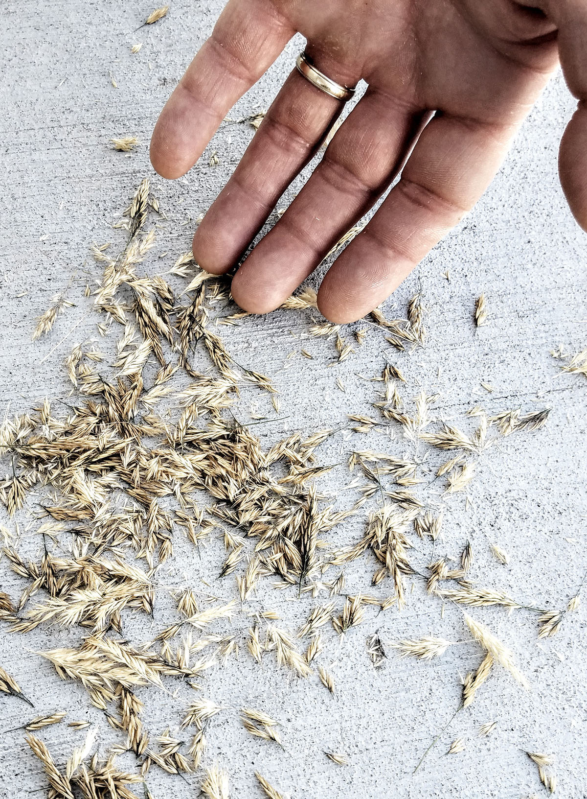

The Grapes of Wrath Book Cover Design

I created a book cover for the classic novel, The Grapes of Wrath by John Steinbeck. This project consisted of taking several of my own photographs for the design and manipulating them in a way that would create a symbolic meaning for the book.

After taking several different photos, I decided to stick with the theme of wheat in the hands. In the novel, the characters suffer greatly from poverty and other trials. In my mind, the wheat (or wheat-like plant) represented prosperity and happiness. In many of the photos taken, the wheat is falling out of the hands, or is being held onto as if it is precious.
After choosing the right photograph, I made a few more changes, editing the stray wheat so that it appeared darker and almost diseased, as if the wheat was going bad. The wheat left in his hand, however, is still good. He is cradling it as if it is the last best thing.